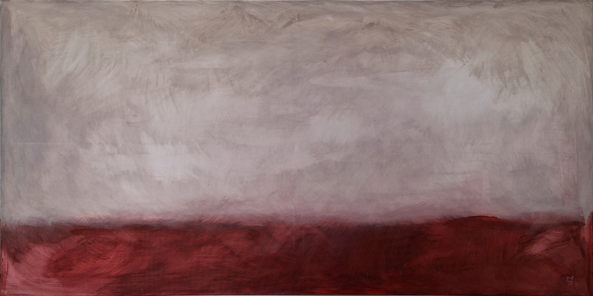

Mundos que invitan
a ser habitados.
No pinto para explicar el mundo. Pinto porque nunca he podido verlo de una sola manera.

Umbral
Esta obra nace de la idea de que todo espacio puede convertirse en un lugar para detenerse. A través de la materia y el color, busca abrir un territorio de contemplación donde cada persona pueda construir su propia experiencia.
La neurodivergencia como lente, no como tema.
Desde pequeña sentí que mi forma de percibir la realidad era diferente. Mientras otras personas parecían aceptar el mundo tal como era, yo necesitaba detenerme, observar los detalles, hacer preguntas y construir conexiones que no siempre eran evidentes. Mucho después comprendí que esa forma de experimentar el mundo está relacionada con ser autista. Pero no es un diagnóstico lo que pinto. Es una lente. La neurodivergencia es cómo miro: más lento, más detenido, más sedimentado en capas que otros apenas ven.
Cada obra es un territorio. Un lugar donde el color se sedimenta en capas, donde la materia respira, donde habitamos el silencio antes que el ruido.
Territorios Interiores (2016–2020)
Antes de Hábitats, trabajé en esta serie de paisajes semi-abstractos. Mostro esta trayectoria porque creo que es importante ver de dónde vengo — cómo evolucionó mi forma de ver el color, el espacio y la materia. Esta serie se presentó en Merkarte (Museo Municipal de Bellas Artes, Santa Cruz de Tenerife, 2020) bajo el pseudónimo eyesasdaggers.

Sin título I

Sin título II
Nota: Estas obras están archivadas. Si tienes interés en conocer más sobre esta etapa de mi trabajo, puedo compartir el catálogo completo de Merkarte.
Antes de que una colección se anuncie
Cada colección nueva se comparte primero con quienes están en esta lista, antes que en cualquier red social. No es un boletín de noticias. Es una forma de estar presente cuando una obra todavía es solo una posibilidad.